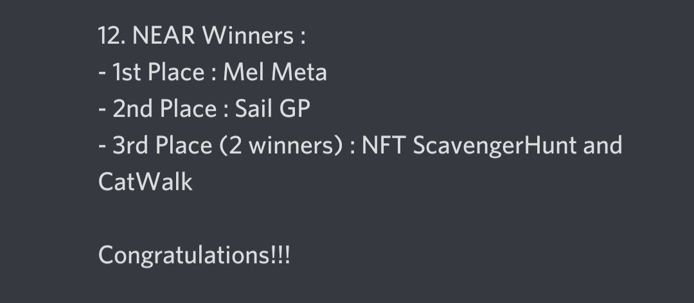

I build precise, beautiful interfaces — from finance platforms to mobile apps. Clean code, serious craft.
Let's create together ↗︎Technology consulting firm based in Dallas, Portland & Toronto. Delivered front-end UI/UX, web development, and complex integrations across multiple client verticals — interior design, insurance, and legacy modernisation.
My team and I won the NEAR Protocol bounty at #ETHToronto — building Mel’s Meta, a decentralised funding platform for small volunteer organisations, powered by NEAR smart contracts. We stayed up all night writing it. ✨
About NEAR: the modular, high-speed protocol powering the agentic future — the execution layer for AI-native apps where agents own assets, make decisions, and transact freely across networks.
Curtis Jaekl · Anton Romankov · Daniel Makarov

Hello World — I'm Melanie. A Software Developer with a front-end specialty and a love for UX/UI.
I didn't take the straight line. I studied Pharmacy at university before realizing the technology I'd loved since attending the 2011 VEX Robotics Round Up wasn't a hobby — it was the work. I switched to Computer Science, and every piece of what I learned before it still informs how I build today. Precision. Care for the user. The understanding that small decisions compound.
At Falkon Technologies I worked across multiple client verticals — building mobile apps in React Native and owning complex form systems for insurance clients. At Wealthscope I built data-rich interfaces for an investment portfolio analysis platform serving DIY investors, financial advisors, and enterprise clients — translating complex market data into actionable intelligence.
Off-screen I'm probably planning a trip, studying a new language, watching Wuthering Heights for the hundredth time, or listening to Grimes on a long walk with Roko — my furry co-founder. The same curiosity that makes a great traveler makes a great engineer.
"What drives me as a developer is the constant personal growth that goes hand in hand with technological evolution. Frameworks, libraries, and languages come and go — it's up to developers to remain adaptable in a changing ecosystem. The most important quality to cultivate is a willingness to keep learning. In an age shaped by artificial intelligence, the role of the developer is no longer just to build, but to guide technology with intention, responsibility and purpose. My growth as a software developer is tied to the growth of the field itself, and I strive for my work to play a role in improving the world and creating meaningful, positive impact."melaniesigrid@protonmail.com
For roles, collaborations, or anything else — the form below works, or write directly to melaniesigrid@protonmail.com. Code lives at github.com/melaniesigrid.